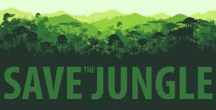
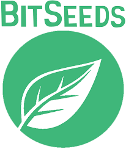

Just say NO
to deforestation!
Palm oil, found in half of all processed foods in the US,
and many common household products is a key contributor to rainforest deforestation!
Read your food and product labels carefully
and refuse to buy products with palm oil or insist on sustainable alternatives.
Fundraise for us!
Music isn’t just universal — it’s a huge part of our heritage.
From concerts in large venues like those Sting used to finance the Rainforest Foundation at its inception,
to smaller concerts at your local coffee shop or bar music is a great opportunity to strengthen your community while helping protect the rainforests!
While many of our fundraisers have been musical events, they don’t have to be–your imagination is the only limit! Rainforest defenders have sold lemonade,
held poetry slams, organized talks on the rainforest and run marathons. Contact us with your idea!

Use BitSeeds!
BitSeeds are radically new way to fund rainforest protection. BitSeeds are a digital currency like Bitcoin with one important difference: every BitSeed that you make, save or spend helps the Rainforest Foundation! By making or “mining”, purchasing, or spending BitSeeds you help us fund programs that protect the rainforest around the world. We guarantee that this is the only time we will ever encourage mining–the mining of BitSeeds that is